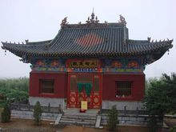

| 首页选项 | 白马风景 | 晋城风光 | 地理位置 | 历史延续 |
白马寺 （山西省晋城市白马寺）
景点简介:

白马寺山森林公园位于晋城市市区北4公里处的城区境内，面积达1万余亩，森林覆盖率达80%以上。不仅自然风景旖旎如画，而且山西省晋城市白马寺山西省晋城市白马寺人文景观底蕴深厚，主要景点有“白马寺拖缰”、“白马禅寺”、“景公塔”、“石佛像”、“黑龙潭”、旅游滑道等。
白马禅寺创建年代不详，但毁坏的比较彻底，原来的旧址上仅剩下一座"景公塔"，耸然矗立，向人们昭示着她往日的辉煌。为了开发旅游资源，1989年晋城市城区宗教局特聘释隆慧法师为城区宗教协会会长、白马禅寺住持，并发起整建白马禅寺。1994年在社会各界的大力支持下，白马禅寺破土动工，先后完成了藏经楼、玉佛殿、地藏殿、大雄宝殿、天王殿、诵经堂、九龙壁（汉白玉质）的复修工程。寺内最宏大的建筑毗卢宝殿的建设也已接近尾声。
景区内的白马禅寺存有缅旬僧人赠送的六尊“玉佛像供奉于玉佛殿内，由台湾佛教基金会赠送的四十多箱《大藏真经》经书安放于藏经楼上。大雄宝殿内的三世佛贴金塑像，庄严肃穆，仅佛头就有2米多高，蔚为壮观。其东西两侧的贴金塑像十八罗汉，形态各异，威猛雄建。"四大天王"执掌着"风调雨顺"，地藏菩萨专司阴间祸福……。天王殿内大肚弥勒佛，心胸永远是那么豪放，"容天下难容之事，笑天下可笑之人"，那种豁达、那种宽宏、那种仁厚，可以让人豁俗虑而渐入佳境。"白马禅寺"及"大雄宝殿"匾额均由原中国佛教协会会长赵朴初先生题写。
主要景点:
石佛岭：在白马寺山后约1公里多的山崖上，有一处摩岩造像群，古称石佛岭。据史料记载，原有造像500余尊。传说一和尚，为了搞清佛像的数量，数了十多遍，每次都不一样，不得已，他用了三天的时间将每尊像都贴上编号，才总算得以数清。由于各种原因，石佛岭造像破坏较大，现仅存30余龛，90余尊，以北齐造像为多，有少量的唐宁元造像，还有几尊似为明、清遗物，十分珍贵。
小析山：在白马寺山之阴，又名淅山。泽州古八景之一"淅山爽气"所在地。原有汤帝庙一座，为古人祷雨之所，"元皇庆年间（1312-1313年）大旱，诏天下立成汤庙，而泽州多山，硗确易旱，立祠独众"。成汤庙外旧有嘉润三池，"娘娘池"内至今仍有细泉涓涓淌。现汤帝庙已毁，但此处风光特异，清新爽人，略加开发，就可成为白马寺森林公园的又一处游览胜地。
版权所有：宋梦圆
地址：山西省晋城市|邮政编码048400